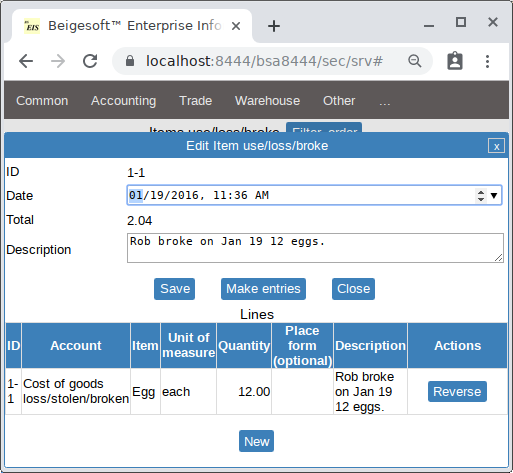
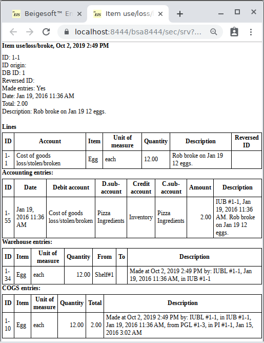

Accounting for goods loss (damaged, stolen).
Keywords: Accounting for goods loss (damaged, stolen).
Rob broke on Jan 19 12 eggs. According to IRS Accounting Periods and Methods, page 19 loss of inventory Bob can increase Cost Of Goods Sold with any loss cost.
* The test sales invoice #3 (for COGS checking) was reversed (voided), otherwise only 4 eggs remain in the warehouse.
Bob filled the new document "Item use/loss/broke":

It made these complex accounting, warehouse and draw goods entries:

Using supplies, e.g. paper for printing reports, is also made by this document, just change the expense account to "Cost of supplies used".